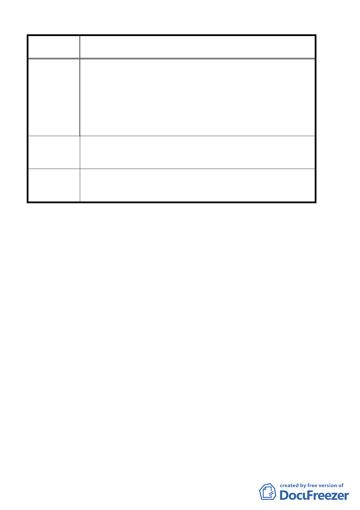

案 名 臺北市北投區都市計畫通盤檢討案（主要計畫）案
使用致遠三路 50 巷、52 巷、54 巷兩側土地計畫，臺北市政府
都市計畫委員會將納入「北投區都市計畫通盤檢討」中檢討變
更。
懇請體諒民困，將已佔用陽明大學學校用地部份，簡木永五平
方公尺及劉大君五平方公尺納入「北投區都市計畫通盤檢討」
內變更為住宅用地，以便陽明大學辦理售予簡、劉兩位當事人，
解決佔用學校用地問題。
懇請將已佔用陽明大學學校用地部份，簡木永五平方公尺及劉
建 議 辦 法 大君五平方公尺納入「北投區都市計畫通盤檢討」內變更為住
宅用地。
委員會議
決議
同意將北投區崇仰段 3 小段 403-１地號變更為第二種住宅區，
及同地段 400 號地號簡木永、劉大君各佔用部份五平方公尺納
入第二種住宅區。
討論事項三
案名：臺北市北投區都市計畫通盤檢討細部計畫案
說明：
一、本案係市府 92 年 6 月 9 日以府都二字第 09202953503 號函送
到會，並自 92 年 6 月 10 日起公開展覽 30 天。
二、法令依據：都市計畫法第 26 條。
三、辦理單位：臺北市政府
四、公民或團體陳情意見：計 50 件，詳如附綜理表。
五、辦理情形：
（一）本計畫案於本會 92 年 9 月 4 日第 517 次委員會議併同「臺北
市北投區都市計畫通盤檢討主要計畫案」提報請准籌組專案
小組，經決議：「本案由張委員金鶚、陳委員錦賜、劉委員小
蘭、黃委員台生、林委員靜娟、于顧問淑婷、黃委員書禮、
黃呂委員錦茹、黃委員武達、劉委員果、廖委員洪鈞、吳委
員光庭組成專案小組詳加審查，並請黃委員書禮擔任召集
人。」為因應委員任期制，於 93 年 1 月 15 日本會第 523 次
第 20 頁，共 49 頁